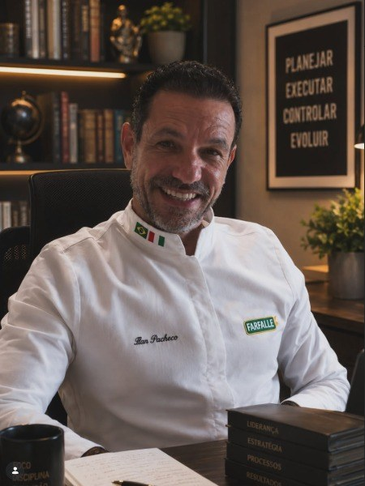

Ninguém nasce sabendo escolher um vinho. Em 4 aulas, você aprende — sem passar vergonha no caminho.
Um curso direto ao ponto para quem já bebe vinho socialmente, mas trava na hora de escolher o rótulo, ler a carta ou dar opinião numa mesa de negócios.
Garantia de 15 dias — sem perguntas.
Você vai aprender a escolher, harmonizar, decidir e presentear vinho com confiança.
Você já travou numa carta de vinhos.
Você já esteve numa mesa — de negócios, de família, de um encontro importante — e alguém passou a carta de vinhos pra você decidir. E naquele segundo, travou.
Não porque você não gosta de vinho. Porque ninguém nunca te explicou, de um jeito que fizesse sentido, o que aquelas palavras na garrafa realmente significam. Então você faz o que todo mundo faz: pede o segundo mais barato, ou repete o nome que ouviu de alguém, e torce pra ninguém perceber que você não tinha ideia do que estava escolhendo.
Isso custa mais do que parece. Custa a confiança de decidir na hora, sem procurar aprovação em quem está do seu lado. Custa a sensação de estar sempre um passo atrás numa conversa que todo mundo ao redor parece dominar.
O problema nunca foi você. Foi que ninguém nunca te ensinou isso de um jeito que não soasse como aula de sommelier.
O "Saindo do Zero"
4 aulas em vídeo, no seu tempo, sem jargão técnico não explicado e sem tom professoral. Cada aula troca teoria por analogia do cotidiano.
Experimenta: você não precisa saber o que são taninosSubstância da casca e da semente da uva que dá aquela sensação de "boca seca" no vinho tinto — quanto mais tanino, mais firme e estruturado ele é. nem o que é um vinho encorpadoVinho com mais densidade e peso na boca — como leite integral comparado a desnatado. Geralmente tintos mais intensos e maduros. antes de começar. A gente te explica no caminho — passa o mouse e confere.
Assista no seu tempo
4 aulas em vídeo, sem data pra terminar — você decide o ritmo.
Faça o quiz de cada aula
Fixa o que você aprendeu — não pra te testar, pra garantir que ficou.
Aplique na próxima taça
Confiança prática pra usar em jantares, compras e conversas de negócio.
Saindo do Zero
Sem Enrolação
R$ 397 R$ 97
à vista
- As 4 aulas completas, no seu tempo
- Quiz de fixação ao final de cada aula
- Ficha de degustação e checklist de armazenamento pra download
- Comunidade fechada (WhatsApp/Telegram)
- Certificado de conclusão
Garantia Sem Enrolação — 15 dias
Assista as 4 aulas. Se ao final você sentir que não ganhou confiança nenhuma pra escolher, harmonizar ou falar sobre vinho, é só mandar mensagem em até 15 dias após a compra. Devolvemos 100%, sem perguntas.
Acesso liberado assim que o pagamento é confirmado — você já assiste a primeira aula no mesmo dia.
O que cada aula cobre
Dez módulos, condensados em quatro aulas — gravadas para ser assistidas com calma e revisitadas sempre que um rótulo desconhecido gerar dúvida.
Aula 01 — Como Escolher e Ler um Vinho Como Quem Entende
Módulos 1 · 2Como ler qualquer rótulo com clareza — classificações legais, categorias como Crianza, Reserva e Gran Reserva — e a introdução da Ficha de Degustação, a ferramenta que acompanha você do início ao fim do curso.
Aula 02 — Terroir, Castas e Harmonização
Módulos 3 · 4 · 31–39 minO módulo mais denso do curso: solo, clima, altitude e idade da vinha explicados um a um; as quinze castas essenciais, tintas e brancas, com suas regiões de origem; e a lógica química da harmonização — acidez, tanino, doçura e peso — que elimina a necessidade de decorar qualquer combinação pronta.
Aula 03 — Guarda e Compra Inteligente
Módulos 5 · 6 · 27–33 minA química real do envelhecimento — por que só uma pequena fatia dos vinhos se beneficia da guarda —, como montar uma adega sem gastar com equipamento caro, e os cinco componentes reais que formam o preço de uma garrafa: terra, rendimento, madeira, tempo de guarda e marca.
Aula 04 — Erros Comuns, Etiqueta, Degustação e a Filosofia Dýnami
Módulos 7 · 8 · 9 · 10 · 48–60 minOs erros mais comuns e sua explicação técnica — da temperatura de serviço ao mito do sulfito —, a etiqueta social sem esnobismo, o método sistemático de degustação (visual, olfativo, gustativo) usado profissionalmente, e o fechamento do curso: por que terroir, o conceito mais técnico do curso, é também o mais humano.
O que você vai conseguir fazer
Escolher um rótulo na carta sem esperar a opinião de outra pessoa primeiro.
Dar uma opinião sobre um vinho numa mesa de negócios sem travar.
Escolher um vinho de presente com segurança, sem pedir ajuda de última hora.
Harmonizar vinho e comida de forma simples, entendendo por que a combinação funciona, sem decorar regras complicadas.

Ilan Pacheco
Engenheiro, empresário, triatleta e cozinheiro. Em 2025 assumiu a Farfalle, manufatura de massas artesanais de Jundiaí com mais de 30 anos de história, e hoje é o curador por trás da Dýnami Gastronomia.
A mesma lente que aplica à gestão e ao treino ele aplica ao vinho: processo antes de discurso, método antes de jargão. É essa lógica — de quem cura a carta de um restaurante de verdade, todos os dias — que estrutura o "Saindo do Zero".
Terroir é a prova de que o lugar deixa marca definitiva em algo vivo.
Um Pinot Noir da Borgonha nunca será igual a um da Califórnia, por mais perfeita que seja a réplica técnica — porque o lugar se impõe sobre a técnica. É a mesma lógica de qualquer trajetória genuína: a marca das experiências e das disciplinas que a formaram não é replicável por quem apenas copia de fora.
Perguntas frequentes
Eu não sei nada de vinho. Isso é pra mim mesmo?
Sim — o curso foi feito exatamente para quem nunca teve aula nenhuma sobre o assunto. Não tem pré-requisito.
Não tenho repertório pra escolher um vinho de R$200+. Isso muda com o curso?
Sim. O curso não te ensina teoria de sommelier — te dá critério prático pra decidir com confiança, em qualquer faixa de preço.
Já tentei aprender sobre vinho antes e não colou.
Provavelmente porque a explicação era técnica demais. Aqui a lógica é o oposto: analogia do cotidiano, sem jargão não explicado.
Não tenho tempo pra curso.
São 4 aulas, no seu tempo, sem data pra terminar. Você assiste quando der.
E se eu comprar e não gostar?
Você tem 15 dias após assistir as 4 aulas pra pedir reembolso total — sem perguntas.
O curso é só teoria ou eu consigo aplicar rápido?
Cada aula fecha com um quiz de fixação e você sai com ficha de degustação e checklist prontos pra usar na próxima vez que for escolher uma garrafa.
O que acontece depois que eu termino as 4 aulas?
Você fica com acesso permanente à comunidade e a todo o material — ficha de degustação, checklist e as 4 aulas — pra consultar sempre que precisar.
Clube Saindo do Zero
O curso é o primeiro degrau de uma jornada mais longa. Para quem quer continuar evoluindo depois das quatro aulas — com curadoria mensal, conteúdo contínuo e a vivência completa do ecossistema Dýnami Gastronomia — o próximo passo é o Clube Saindo do Zero.
Em estruturação
Formato e condições do Clube ainda estão sendo fechados. Quem já é aluno do curso será avisado em primeira mão.
Você não precisa continuar travando na hora de escolher.
Em 4 aulas, sem jargão, você sai sabendo decidir com confiança — na próxima mesa, na próxima compra, na próxima conversa.
Quero Aprender Sem Enrolação — R$97Garantia de 15 dias. Se não sentir confiança nenhuma, devolvemos 100%.